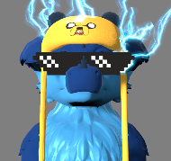

If something you want made is above and beyond or not listed, let me know via Discord and I will let you know whether I can produce it and for how much.
VRChat Avatars / VTuber (VSeeFace) Avatars
Avatars in this section may be produced for both of these platforms at no extra charge.Simple avatar recolor: $20.
Avatar recolor and retexture: $30.
Add-ons:
- Props: $5-$20 per custom prop, $10-$30 per dynamic bone prop, free for customer-provided props. Toggle(s) included.
- Particle effects: $10 per effect. Toggle(s) included.
VRChat Worlds
Converted from user-provided Minecraft world: $20.Small "room sized" world: $25.
Regular "house sized" world: $40.
Large "estate sized" world: $60, +$20 per terrain square.
Add-ons:
- Props: $5-$20 per custom prop, free for customer-provided props.
- Particle effects: $10 per effect.
Comments? Questions? Concerns? Please feel free to message me on Discord at icybeckacrafter#7088.
Gallery
VTuber/VRChat Avatar Examples
Simple Avatar Recolor

Base model is the "Da'vali" by Rai Kitamatsu.
Example with Props and Particle Effects
Base model is the "Bestboi Dutchie" by Sequential_ShutLock, VictonRoy, and Rustydustyfox.
VRC Regular-Sized World (WIP) Example

Various textures from the Unity Asset Store and opengameart.org.